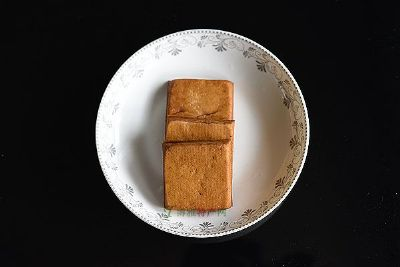
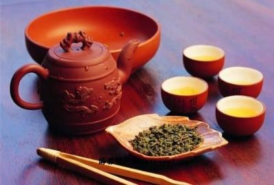
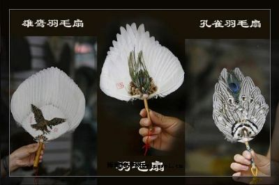

高淳特产
固城湖螃蟹历来被称为蟹中之冠，这与固城湖的特殊生态环境息息相关。固城湖水域百里方圆，碧波荡漾，水质清纯如镜，水深底硬，水草丰茂，延伸宽阔，气候宜人，是螃蟹定居生长最理想的“水晶宫”。湖田周围没有任何污染源头，阡陌交错、绿树成荫、天水一色、鸥鹭翔集，有着令人心醉的自然环境。因此在这里生长的螃蟹，形态和肉质在螃蟹家族中尤为与众不同，它有四大特征：一是青背，蟹壳成青泥色，平滑而有光泽；二是白肚，贴泥的脐腹甲壳，晶莹洁白，无墨色斑点；三是黄毛，蟹腿的毛长而呈黄色，根根顺滑；四是金爪，蟹爪金黄，坚实有力，放在玻璃板上，八足挺立，双螯腾空，脐背隆起，威风凛凛。其肉质肥嫩、鲜美，营养丰富。据专家测定，每100克固城湖螃蟹蟹肉中含蛋白质14克，铁13毫克，核黄素0.71毫克，维生素A5960国际单位。固城湖螃蟹除了是名贵的美食，有较高的营养价值外，还有一定的药用价值……[详细]

老街布鞋老棉布鞋是高淳著名的特产之一。早在明清时期,高淳布鞋就名闻遐尔,远销苏、锡、常、宁、镇、扬和安徽芜湖、宣州地区。那时候,妇女大都不事农活,特别重视做针线活儿。所以农村中的妇女很少有不会纳鞋底、做布鞋的。姑娘们长到十一、二岁,做娘的就要手把手地教会她们剪鞋样、绣鞋花、纳鞋底、做鞋帮。不会做鞋的姑娘嫁到人家后,婆婆就不会喜欢,村里人就会嘲笑,说是能剪能画的是麻利婆,不会剪画的是钝煞鬼。满清时期女人时兴裹小脚,俗称三寸金莲”这种封建主义的枷锁,束缚了妇女数千年。那时候,衡量女人美丑的标准就看脚大脚小,脚小便是美人。这种裹脚的恶习,虽为广大妇女所深恶痛绝,但-者廖廖无几。女孩子迫于封建礼教的压力,不得不含着眼泪让大人们用白布一层一层地将稚嫩的脚掌包裹起来。经过长年累月的煎熬,硬挤出一双小脚来。然而,要给三寸金莲做一双合适的绣花鞋,可不是一件易事。首先……[详细]

羽毛贡扇古镇淳溪,地处固城、丹阳、石臼三湖怀抱之中。湖中芦苇丛生,湖滩遍布,是水禽生长、繁殖最佳的栖身之地。古时候，湖中雁鹅、鸬鹚、獐鸡等水禽处处皆是,飞起时遮天蔽日,落下时盖地一片。这些水禽的羽毛色彩鲜艳,十分华丽,是制作羽扇的最佳原料。早在1800多年前,三湖沿岸的农民便利用冬闲季节,深入湖滩狞猎,捕得水禽后,将禽肉自食,拔其羽翎到街上出售。那时的古镇老街是三湖环绕的高阜地区,自然成了制作和销售羽毛扇的场所。高淳羽毛扇的历史,源远流长,相传1700多年前,魏、蜀、吴三国鼎立、争霸中原时。东吴黄武大帝孙权之大将周瑜曾在古丹阳湖高淳西部水域一边操练水军,一边督促部队围垦屯田。他还把当地民众组织起来,实行军事编制,使兵屯和民屯相结合。大约为了鼓励人们屯田,他曾一度把家眷搬迁到春秋时修筑的相国圩内(即现今的砖墙〉。周瑜娶乔国老之二女——小乔为妻。小乔貌若……[详细]

东坝镇红松村位于东坝镇以南，是典型的丘陵地区，近年来，红松村以产业富民为突破口，大力发展以葡萄为主的经济林果，取得明显成效。 目前红松村拥有1000多亩的有机葡萄种植基地，并且成立了红岗经济林果合作社，有葡萄品种20个，包括“美人指”、“金手指”、“巨玫瑰”、“夏黑”等等，葡萄全部使用以农家肥为主的有机肥料种植，大大提高葡萄品质和经济效益。 由于技术更新和管理科学，红松村的葡萄实现了增收富民。红松村的葡萄供不应求，已与红宝丽等多家单位签订了供货协议。 据了解，红松村还引进了新的酿酒葡萄——赤霞珠，用于酿造葡萄酒，建造了自己的葡萄的酒厂，进行葡萄深加工，进一步提高葡萄的产值。……[详细]

老街豆腐干这日在高淳老街上闲逛，不经意发现一面临街的纱窗后，几个身穿蓝印花布衣的女子正在低头忙碌。只见她们两人一组，解开一个四四方方、软塌塌的纱布包，里面竟是一整块巨大的豆腐，白白嫩嫩十分诱人。随即，这些女子又每人操起一把刀，只见刀起刀落毫不干扰，顷刻间，巨大的豆腐已被“肢解”成几千块。手法之娴熟，让人望而生畏。紧接着似乎是“分装”，摊开一面手帕大小的纱布，抓一块小豆腐置于其上，拇指前拨，两小指左右一挑，腕力向前送，一个漂亮的前滚翻，一个四四方方的小布包便置于台前了！木板上的小包越堆越高，隔窗而望的众人们，呼声便也越来越高。这是什么手艺？心里想着，眼睛便好奇地张望。只见头顶是印有“薛记”金字的大红灯笼，前方几步之遥的木板门大开着，一名身穿红色唐装的青年男子，正举着包装精美的豆腐干笑迎顾客，原来是高淳的老字号薛记。据说这里的豆腐干是选用上等的黄豆磨浆、……[详细]

作为南京特有的圩区水产蔬菜——花香藕，鲜嫩、甜、香、脆是它的招牌特色，在明朝时候甚至被制作贡品“捶藕”而进奉北京，因此它在南京的地产农产品历史占有着举足轻重的地位。大士茶亭因其获名“花香藕只有南京才有，这在全国都非常有名。”市农林局蔬菜处调研员朱宏建对花香藕等水生蔬菜研究多年，深受老南京喜爱的“水八鲜”，它们的“出身”与南京郊区特有的地理环境是分不开的。朱宏建认为，南京郊区如江东、沙洲、雨花台等地区乡河、塘水面非常多，玄武湖、莫愁湖水面达到数千亩，土地肥沃，气候温和，再加上光照充足，雨量充沛，沙洲圩是古白鹭洲之所在，河网密布，水质清纯，因而这里出产的水八鲜非常鲜嫩可口。以花香藕为代表的“水八鲜”在南京影响颇深，水西门外大街上的大士茶亭甚至也是因它们而获名。何以冠名“花香”作为南京地产“水八鲜”之一，花香藕在南京的养殖历史十分漫长，可能很多市民不知道的……[详细]

青山碧螺春青山碧螺春，高淳地方名茶，产于风景秀丽的高淳东部青山丘岭，这里土地肥沃，风光旖旎，林壑优美。相传清康熙皇帝到江南巡游见此茶青翠似碧玉，形状蜷曲如螺，采制于春天而赐“碧螺春”。碧螺春由采摘茶树嫩梢初展的一芽一叶制成，叶长长约一点五厘米，嫩叶背面密生茸毛，茸毛也叫白毫，白豪越多，说明茶叶越嫩，品质越好。碧螺春的品质特点是：色泽碧绿，外形紧细、蜷曲，白毫多；香气浓郁，滋味醇和，饮时爽口，饮后有回甜的感觉；泡出茶来，汤色碧绿清澈，叶底嫩绿明亮。碧螺春茶叶含有咖啡碱、茶碱和多种维生素及微量元素，有醒脑、健睥、清心、明目、润喉之功效，喝了之后，能使人精神振奋，消除疲劳。制作碧螺春是一项辛苦细致的劳动，又是一项技术性很强的传统手艺。一斤碧螺春干茶，要采摘五万五千至六万的嫩芽，经过精拣、杀青、揉捻、搓团等工序，采摘需及时、精细，做工也十分讲究。春天的清晨……[详细]

高淳羽毛扇被钦定为贡扇后,致使高淳的羽扇行业迅速发展和兴盛起来。明末清初,出现了行会。在行会的统一主持下,每年农历三月十五日,所有羽毛扇商店开始挂牌、出样品,行会则派出代表挨家挨户检查产品的规格和质量,评定价格。产品质量好的就评为进贡商号,挂上进贡羽扇的牌子,由其承担当年贡扇生产任务。当时,羽扇行规相当严格,任何人未经行会批准,不得擅自经营。即便是自己生产的产品,要拿到市场销售也必须经行会同意。 解放后,在党和人民政府的扶持下,高淳羽扇制作行业得到了飞速发展,产销量由解放前夕的40万把猛增到100万把,畅销到苏联、加拿大、南洋群岛及大洋洲等23个国家和地区。1951年, 为了表达对党和人民政府的感激之情,高淳羽扇工人挑选最好的雕翎,精心制作了四把宝剑式象牙托柄的大型羽扇,分别赠送给了毛主席、朱总司令和华东军政委员会主席饶漱石、苏南行署主任管……[详细]